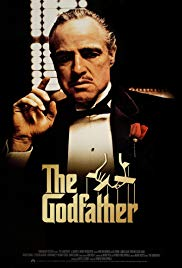
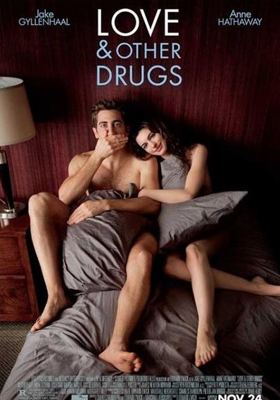
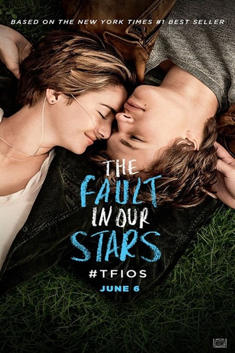

- Name: Godfather
- Year: 1972
- Genre: Crime, Drama
The Godfather is a 1972 American crime
film directed by Francis Ford Coppola
and produced by Albert S. Ruddy, based
on Mario Puzo's best-selling novel of
the same name. It stars Marlon Brando
and Al Pacino as the leaders of a fictiona
l New York crime family. The story,
spanning 1945 to 1955, chronicles the family
under the patriarch Vito Corleone
(Brando), focusing on the transformation of
Michael Corleone (Pacino) from reluctant
family outsider to ruthless mafia boss.
Watch online free

- Name: Captain America: Civil War
- Year: 2016
- Genre: Thriller, Fantasy, Action
Captain America: Civil War is a 2016 American superhero
film based on the Marvel Comics character Captain America,
produced by Marvel Studios and distributed by Walt Disney
Studios Motion Pictures. In Captain
America: Civil War, disagreement over international
oversight of the Avengers fractures them into opposing
factions—one led by Steve Rogers and the other by Tony Stark.
Watch online free

- Name: Love and other drugs
- Year: 2010
- Genre: Comedy, Drama, Romance
In 1996, Jamie Randall is fired from a Pittsburgh electronics
store for having sex with his manager's girlfriend. His wealthy
brother Josh announces at the dinner table at their parents'
house that he has found Jamie a job as a pharmaceutical sales
representative. After attending a Pfizer training program where
he has sex with the instructor, Jamie goes to work for the
company and tries to get doctors to prescribe Zoloft and Zithromax.
He is rebuffed, much to the dismay of his regional manager, Bruce,
who sees Jamie as his ticket to the "big leagues" of Chicago.
Watch online free

- Name: The Fault in Our Stars
- Year: 2014
- Genre: Drama, Romance
Hazel Grace Lancaster, a 16-year-old with thyroid cancer that
has spread to her lungs, attends a cancer patient support group
at her mother's behest. At one meeting, Hazel meets a 17-year-old
boy currently in remission named Augustus Waters, whose Osteosarcoma
caused him to lose his right leg. Augustus is at the meeting to
support Isaac, his friend who has eye cancer. They meet after the
support group and begin to talk. When everything seems to be going
well, Augustus pulls out a cigarette and puts it between his lips.
Watch online free